The history of Fox
Foxes originated in Eurasia during the Middle Pleistocene (at least 400,000 years ago) before spreading globally.
The common ancestor of all canines was likely similar to the modern gray fox,
which originated in North America around 3.6 million years ago.
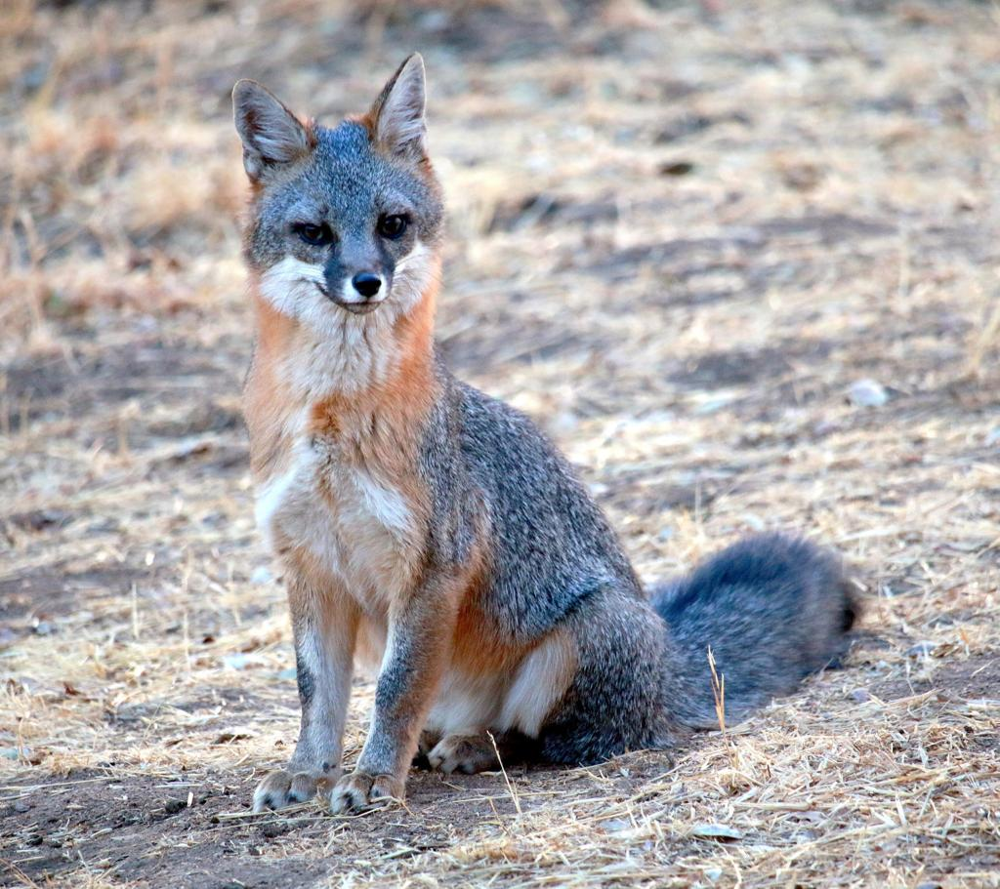
The most widespread species, the Red Fox, evolved in Eurasia and later colonized North America.
Meanwhile, species like the Arctic Fox originated in the Tibetan Plateau.
Foxes are highly adaptable, opportunistic predators belonging to the Canidae family, sharing ancestry with wolves and dogs.
Their evolutionary history dates back roughly 10 million years ago, making them one of the oldest living lineages of canids.
Unlike pack-hunting wolves, foxes evolved as solitary, opportunistic survivors.
Modern:
Today, foxes boast the largest natural distribution of any land mammal except humans.Due to their intelligence and omnivorous diet, they have evolved to thrive in both dense wilderness and urban environments.
Diet & Lifestyle
Diet:
Foxes have a very diverse diet.They are expert hunters, catching rabbits, rodents, birds, frogs and earthworms as well as eating carrion.
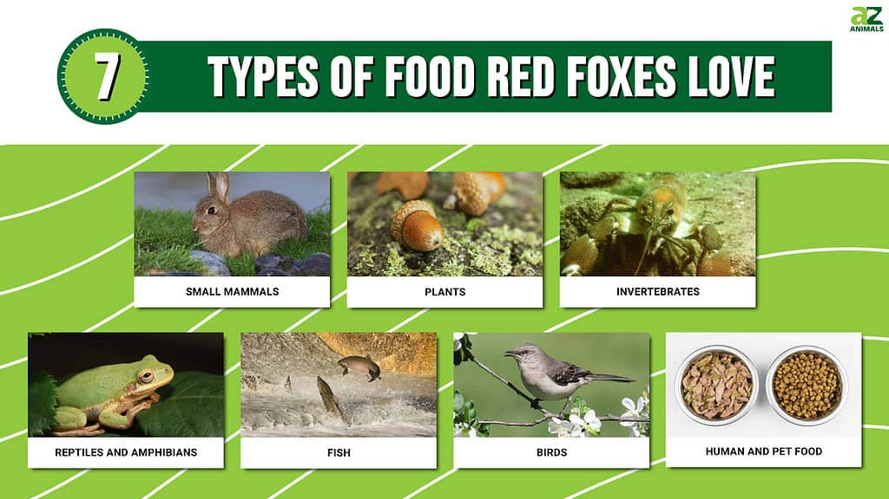
But they aren’t carnivorous - they are actually omnivores as they dine on berries and fruit too.
Urban foxes will also scavenge for food in dustbins and often catch pigeons and rats.
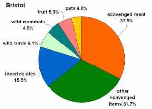
Fox cubs enter the world deaf, blind and dependent on their mother’s milk, much like domestic dog puppies.
The cubs start eating solid food at around four weeks old and are usually completely weaned by the time they are 12 weeks of age.
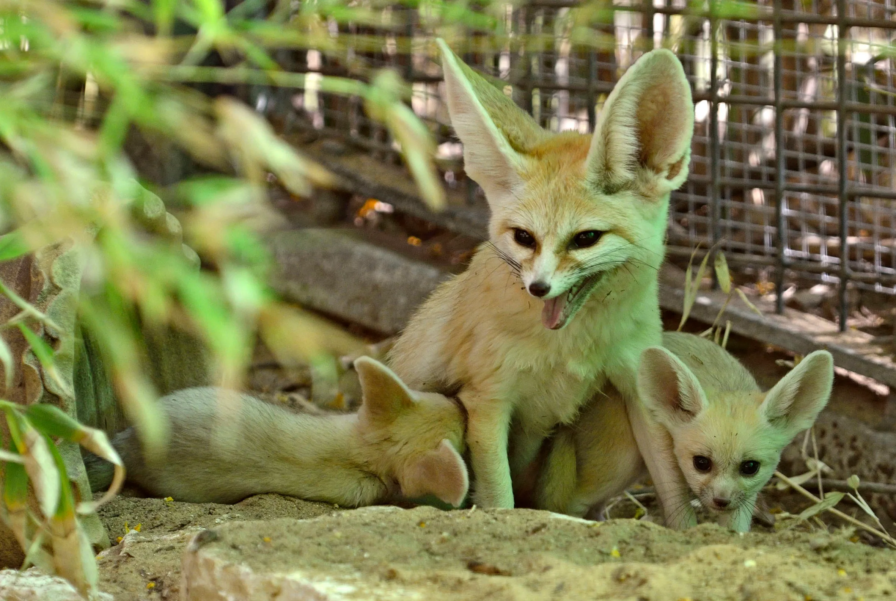
Since foxes are omnivores, their diet is made up primarily of invertebrates such as insects and small vertebrates such as reptiles and birds.
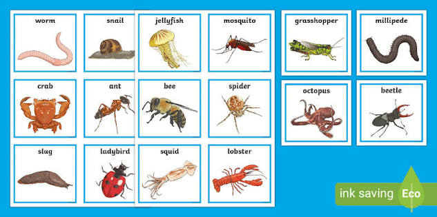
They may also eat eggs and vegetation.
Many species are generalist predators, but some (such as the crab-eating fox) have more specialized diets.
Most species of fox consume around 1 kg (2.2 lb) of food every day!
Foxes cache excess food, burying it for later consumption, usually under leaves, snow, or soil.
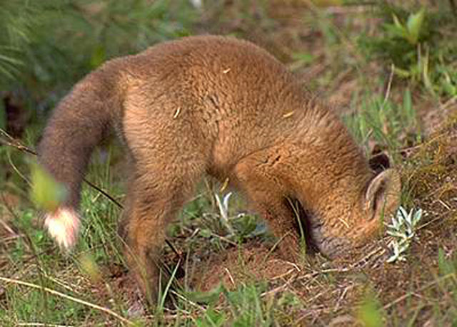
While hunting, foxes tend to use a particular pouncing technique, such that they crouch down to camouflage themselves in
the terrain and then use their hind legs to leap up with great force and land on top of their chosen prey.
Using their pronounced canine teeth, they can then grip the prey's neck and shake it until it is dead or can be readily disemboweled.
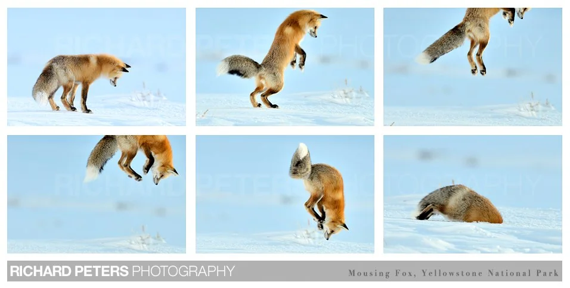
Even though foxes are omnivores, they cannot eat certain human foods, toxic plants, and cooked bones.
Highly toxic items like chocolate, grapes, raisins, onions, garlic, and macadamia nuts should be strictly avoided.
You should also steer clear of cooked bones, raw pork, and dairy products.
Toxic and harmful foods for foxes includes:
Grapes and Raisins: Highly toxic and known to cause kidney failure in canids.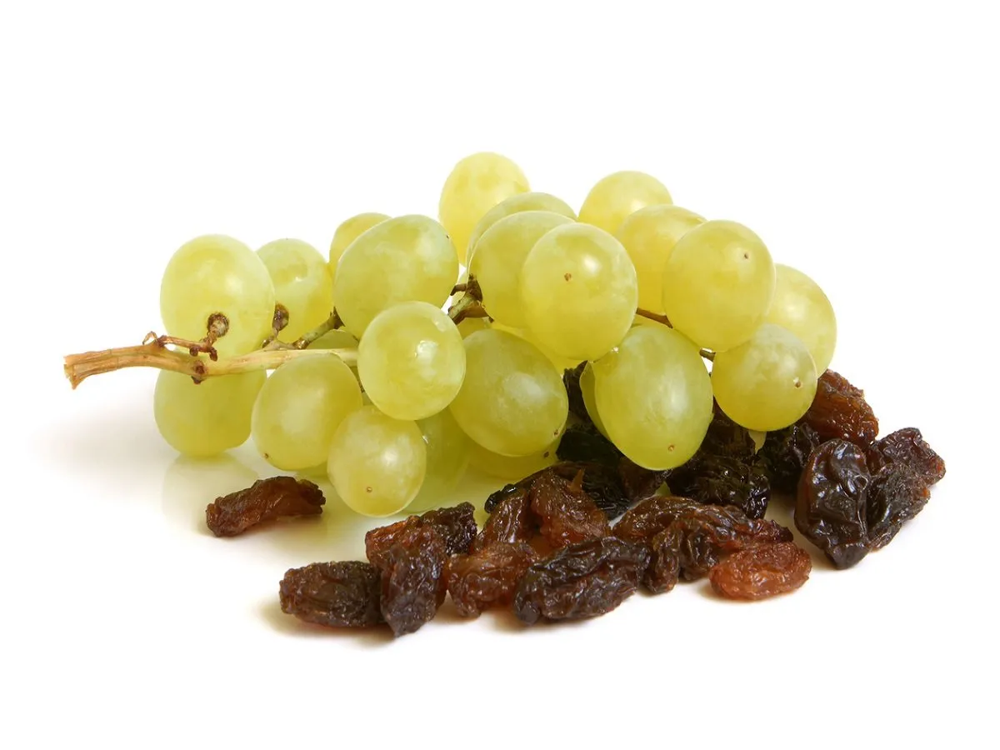
Onions, Garlic, and Chives: These contain compounds that can damage a fox's red blood cells, leading to anemia.
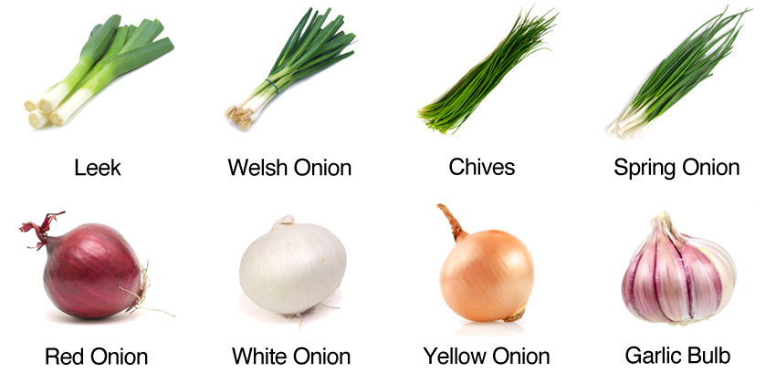
Chocolate: Contains theobromine, which is extremely toxic and can be fatal to foxes.
Macadamia Nuts and Walnuts: These nuts contain toxins that can cause neurological symptoms and weakness.
Xylitol: An artificial sweetener often found in sugar-free gum, peanut butter, and baked goods; it is highly lethal to canids.
Cooked Bones: Cooked bones become brittle and can splinter, causing severe internal damage or choking.
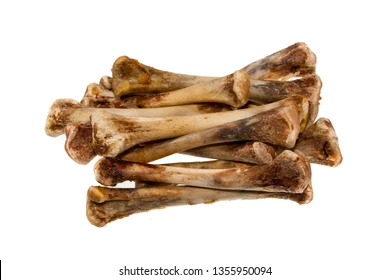
Raw Pork: Bears a high risk of containing the Trichinella parasite.
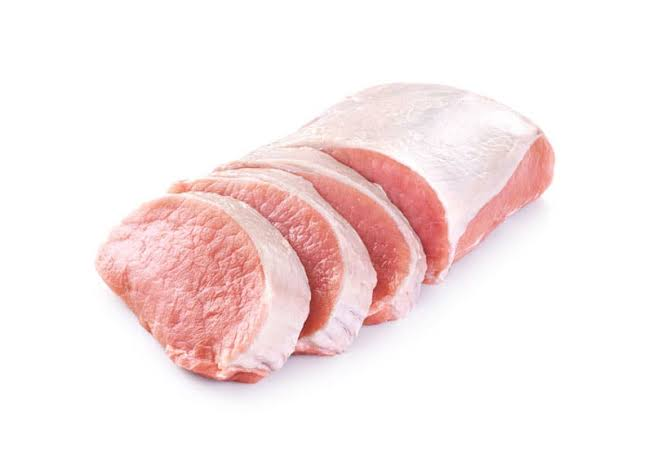
Dairy Products: Foxes are lactose intolerant, and eating dairy will cause severe digestive distress and diarrhea.
Cat Food: Cat food is too high in calories and proteins, lacking the correct nutritional balance for a fox.
Relying on it can lead to severe organ and kidney failure.
Life style:
In the wild, the typical lifespan of a fox is one to three years, although individuals may live up to ten years.Unlike many canids, foxes are not always pack animals.
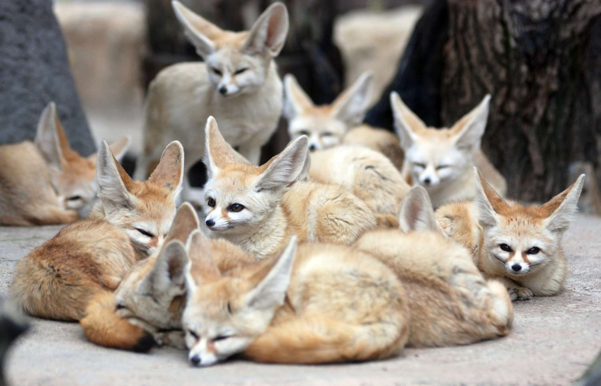
Typically, they live in small family groups, but some (such as Arctic foxes) are known to be solitary.
Foxes have been found to be in decline, with the population estimated at 357,000 in 2018.
While the bulk of the UK’s fox population lives in the countryside, a 2017 study found that the UK’s urban fox population may be as high as 150,000.

Foxes are fantastic diggers and live underground in excavated burrows called dens or ‘earths’.
Foxes can live above ground too, especially if they can find a sheltered spot.
The gray fox is one of only two canine species known to regularly climb trees, the other is the raccoon dog.
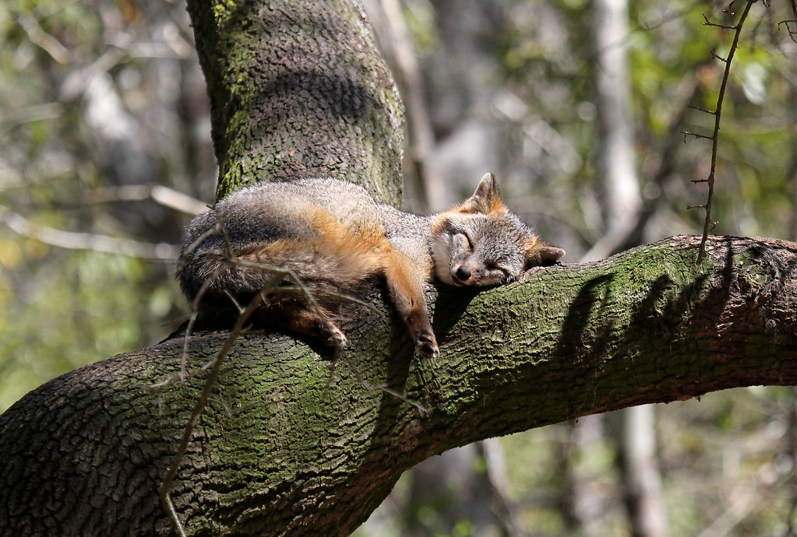
Several fox species are endangered in their native environments.
Pressures placed on foxes include habitat loss and being hunted for pelts, other trade, or control.
Due in part to their opportunistic hunting style and industriousness, foxes are commonly resented as nuisance animals.
Contrastingly, foxes, while often considered pests themselves, have been successfully employed to control pests on fruit farms while leaving the fruit intact.
Vocalization
- - Whine
Made shortly after birth. Occurs at a high rate when kits are hungry and when their body temperatures are low.
Whining stimulates the mother to care for her young; it also has been known to stimulate the male fox into caring for his mate and kits.
- Yelp
Made about 19 days later. The kits' whining turns into infantile barks, yelps, which occur heavily during play.
- Explosive call
At the age of about one month, the kits can emit an explosive call which is intended to be threatening to intruders or other cubs; a high-pitched howl.
- Combative call
In adults, the explosive call becomes an open-mouthed combative call during any conflict; a sharper bark.
- Growl
An adult fox's indication to their kits to feed or head to the adult's location.
- Bark
Adult foxes warn against intruders and in defense by barking.
In the case of domesticated foxes, the whining seems to remain in adult individuals as a sign of excitement and submission in the presence of their owners.
Fox Family
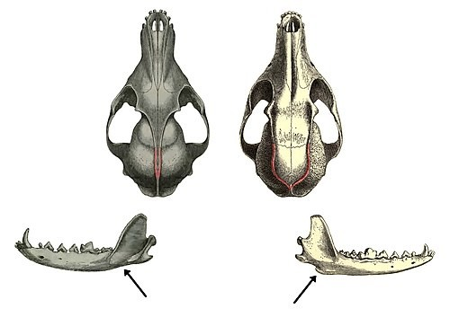
Comparative illustration of skulls of a true fox (left) and gray fox (right), with differing temporal ridges and subangular lobes indicated
Within the Canidae, the results of DNA analysis shows several phylogenetic divisions:
The fox-like canids, which include the kit fox (Vulpes velox), red fox (Vulpes vulpes), Cape fox (Vulpes chama), Arctic fox (Vulpes lagopus), fennec fox (Vulpes zerda), and bat-eared fox (Otocyon megalotis).
The wolf-like canids (genus Canis, Cuon, and Lycaon) including the dog (Canis lupus familiaris), gray wolf (Canis lupus), red wolf (Canis rufus), eastern wolf (Canis lycaon), coyote (Canis latrans), golden jackal (Canis aureus), Ethiopian wolf (Canis simensis), black-backed jackal (Canis mesomelas), side-striped jackal (Canis adustus), dhole (Cuon alpinus), and African wild dog (Lycaon pictus).
The South American canids, including the bush dog (Speothos venaticus), hoary fox (Lycalopex uetulus), crab-eating fox (Cerdocyon thous) and maned wolf (Chrysocyon brachyurus).
Various monotypic taxa, including the gray fox (Urocyon cinereoargenteus).
Pelage
Fox species differ in fur color, length, and density. Coat colors range from pearly white to black-and-white to black flecked with white or grey on the underside.Fennec foxes (and other species of fox adapted to life in the desert, such as kit foxes), for example, have large ears and short fur to aid in keeping the body cool.
Arctic foxes, on the other hand, have tiny ears and short limbs as well as thick, insulating fur, which aid in keeping the body warm.
Red foxes, by contrast, have a typical auburn pelt, the tail normally ending with a white marking.
A fox's coat color and texture may vary due to the change in seasons; fox pelts are richer and denser in the colder months and lighter in the warmer months.
To get rid of the dense winter coat, foxes moult once a year around April; the process begins from the feet, up the legs, and then along the back.
Coat color may also change as the individual ages.
Here are all the fox species:
Canis
Ethiopian wolf, sometimes called the Simien fox or Simien jackal.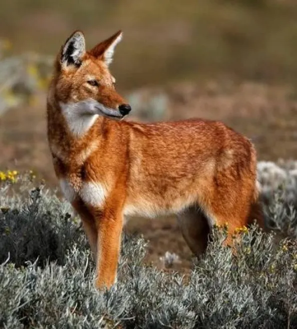
Ethiopian wolf, native to the Ethiopian highlands
Cerdocyon
Crab-eating fox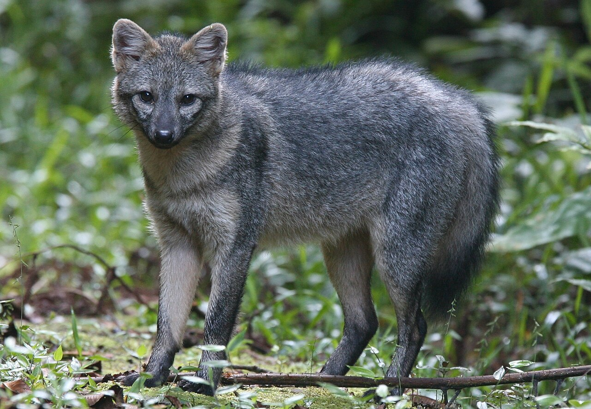
Crab-eating fox, a South American species
† Dusicyon
Extinct genus, including the Falkland Islands wolf, sometimes known as the Falklands Islands fox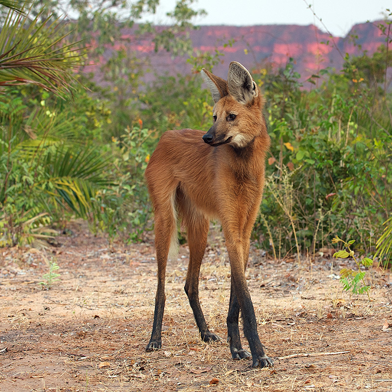
(looks like slenderman...)Falkland Islands wolf Illustration by John Gerrard Keulemans (1842–1912)
Lycalopex
Culpeo or Andean fox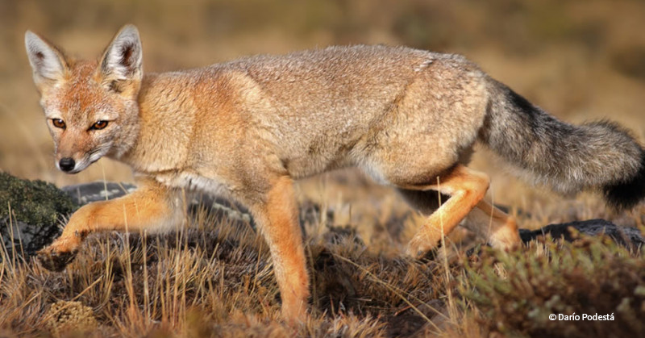
Darwin's fox

South American gray fox
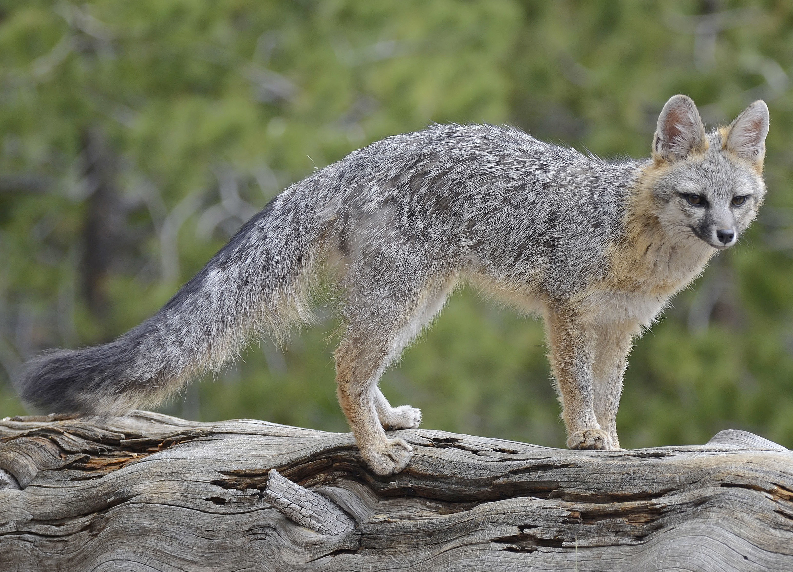
Pampas fox
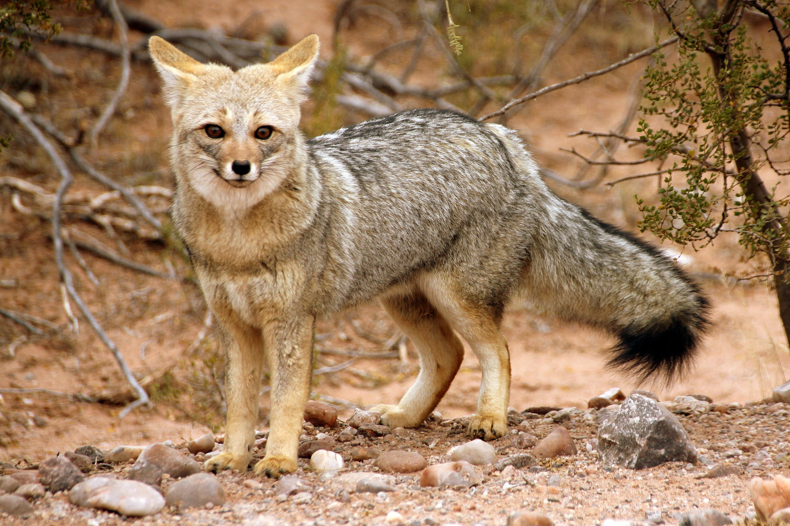
A pampas fox in Departamento de Flores, Uruguay
Sechuran fox
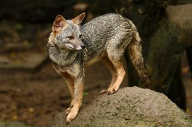
Hoary fox
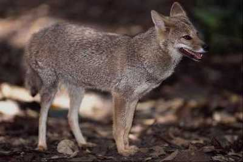
Otocyon Bat-eared fox
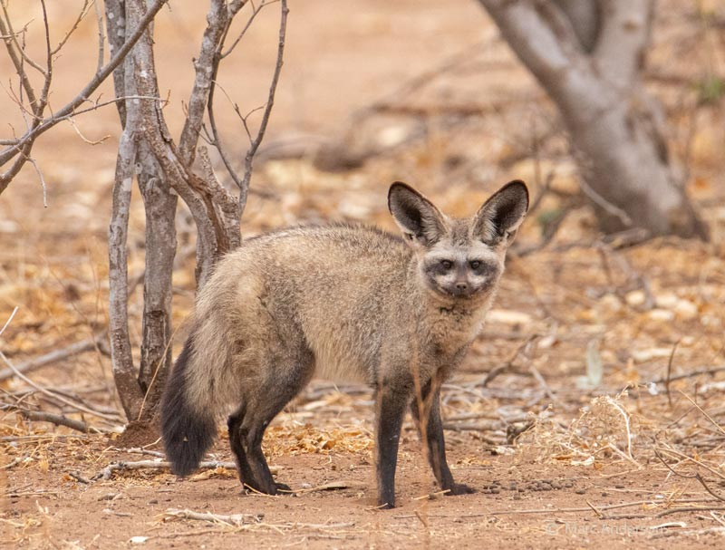
Bat-eared fox in Kenya
Urocyon
Gray fox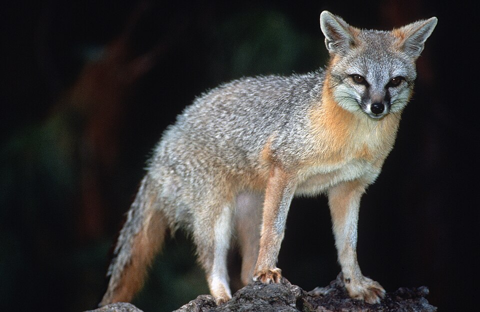
Gray fox (Urocyon cinereoargenteus), in Midtown, Palo Alto, California
Island fox
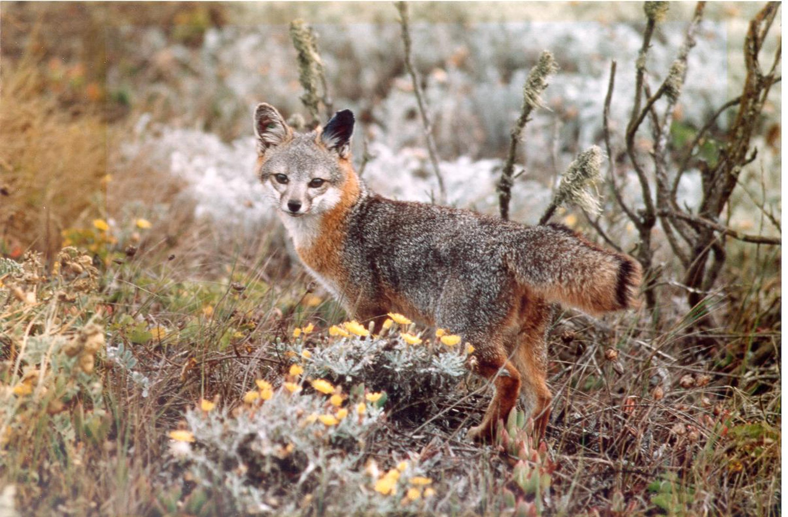
Cozumel fox (undescribed)
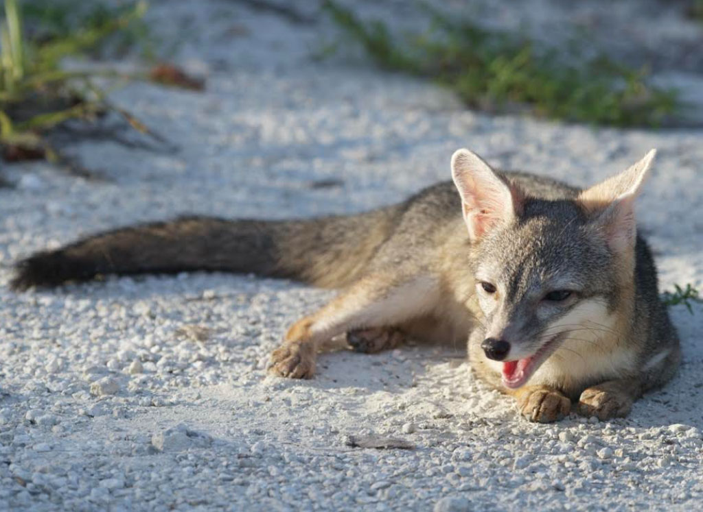
Vulpes
Arctic fox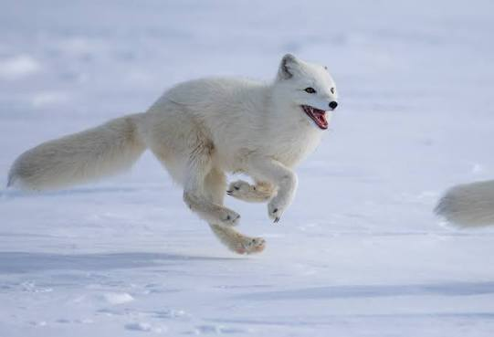
Bengal fox
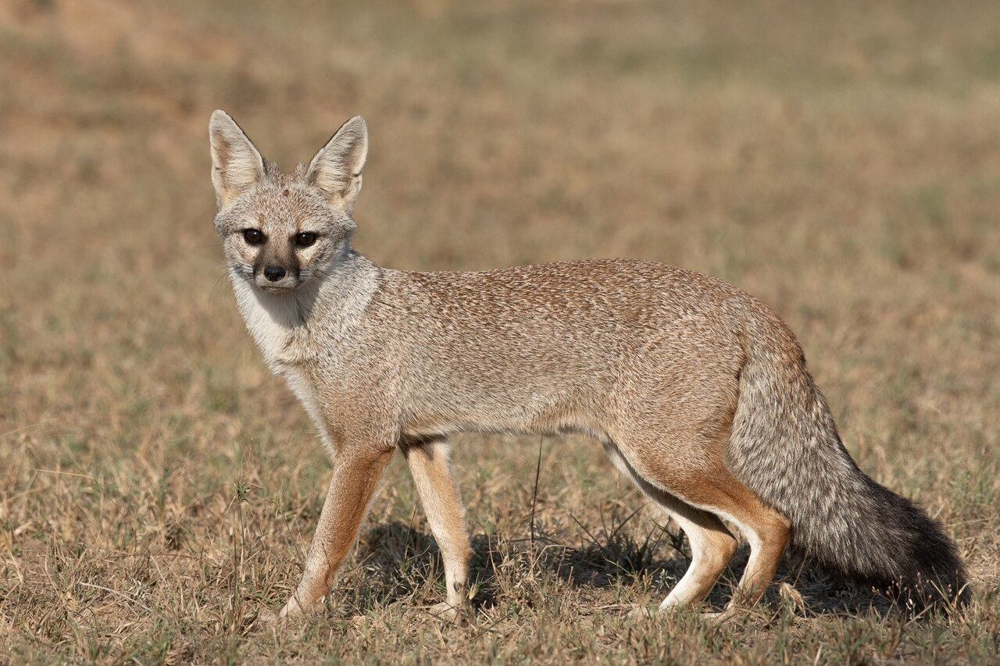
Blanford's fox

Cape fox
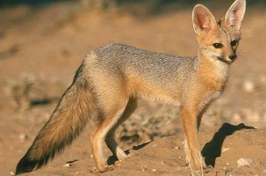
Corsac fox
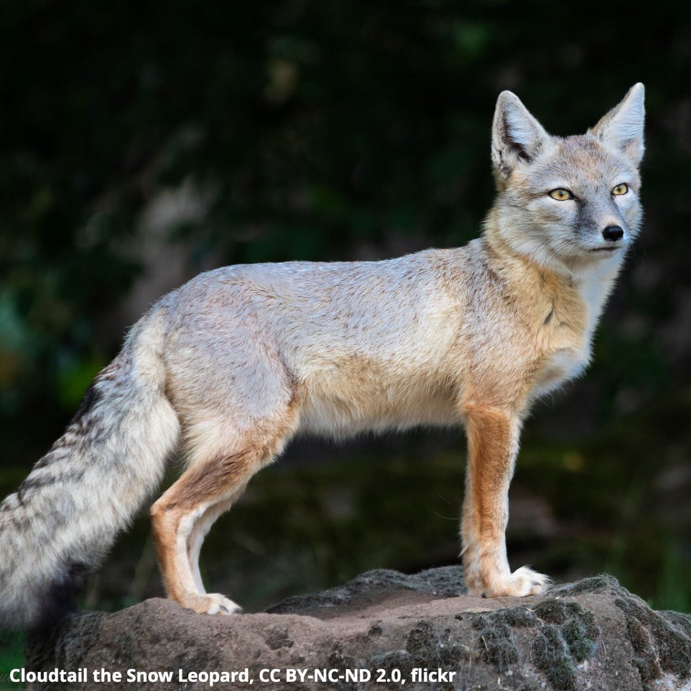
Fennec fox
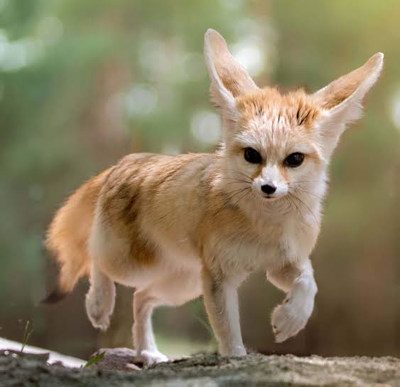
Kit fox
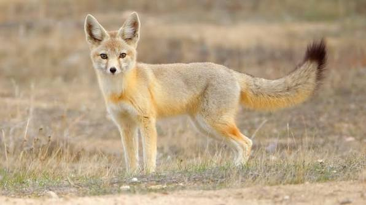
Pale fox
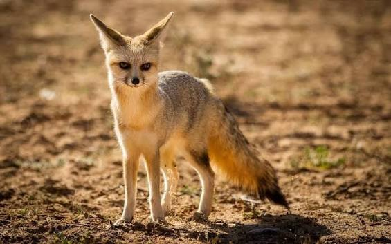
Rüppell's fox

Red fox
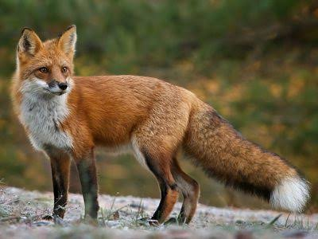
Swift fox
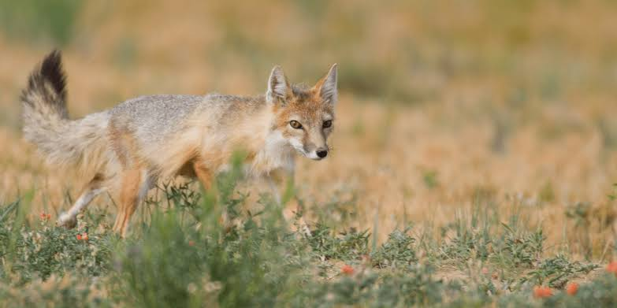
Tibetan fox
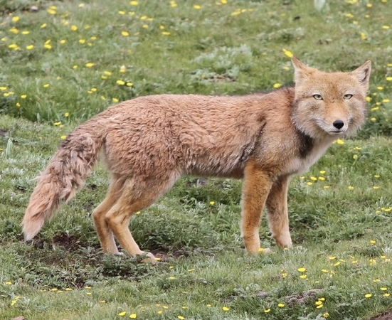
Fox Clicker
Click fox to catch it
Score
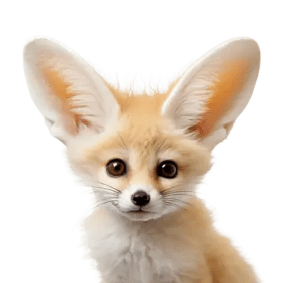